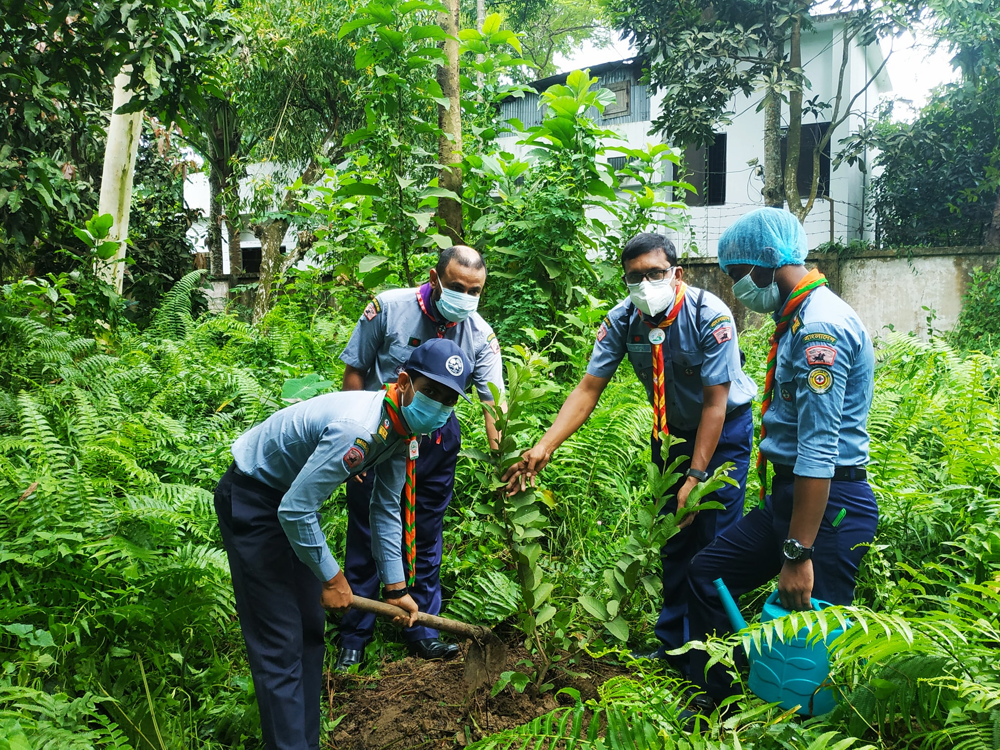

Kamrul Dreams
Live life the way you like

Do some good deeds that you may smile when it is time to leave this earth and your soul
1. Smile and say hello to everyone you cross paths with. I do this with everyone I see and it’s always great when someone does it back.
2. Hold the door open for someone.
3. Donate items from your home. Another thing you could do is donate an item for each item you bring home. So, each time you buy a shirt, donate a shirt!
4. Do a chore that you normally don’t do for your spouse. This could include doing the dishes, taking out the trash, cleaning your home, making a meal, dealing with a bill, and so on.
5. Donate blood.
6. Bring a trash bag on a walk and collect any trash that you may come across.
7. If someone is spreading gossip, say something nice about that person instead.
It's not about to be happy alone, spread love and make more happy